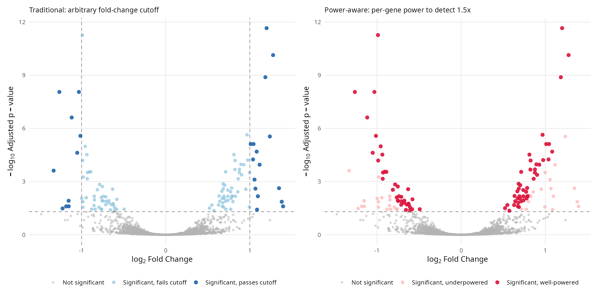
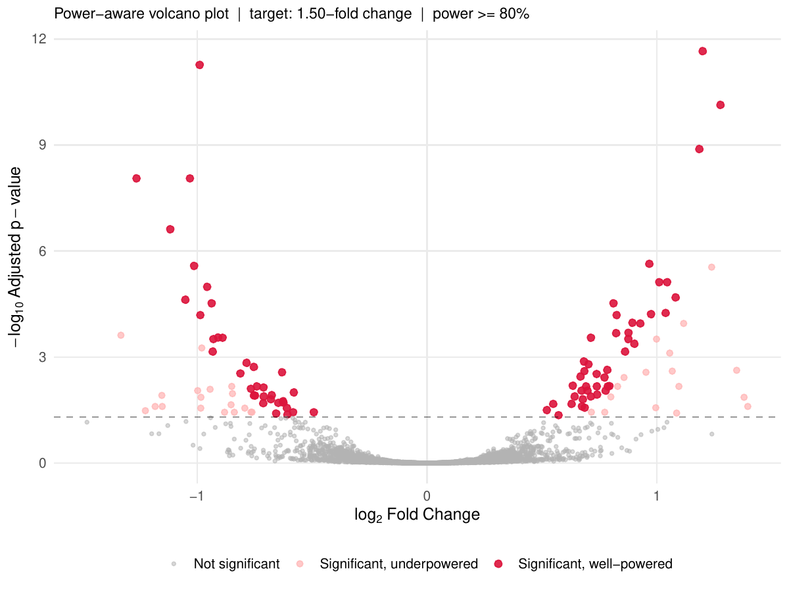
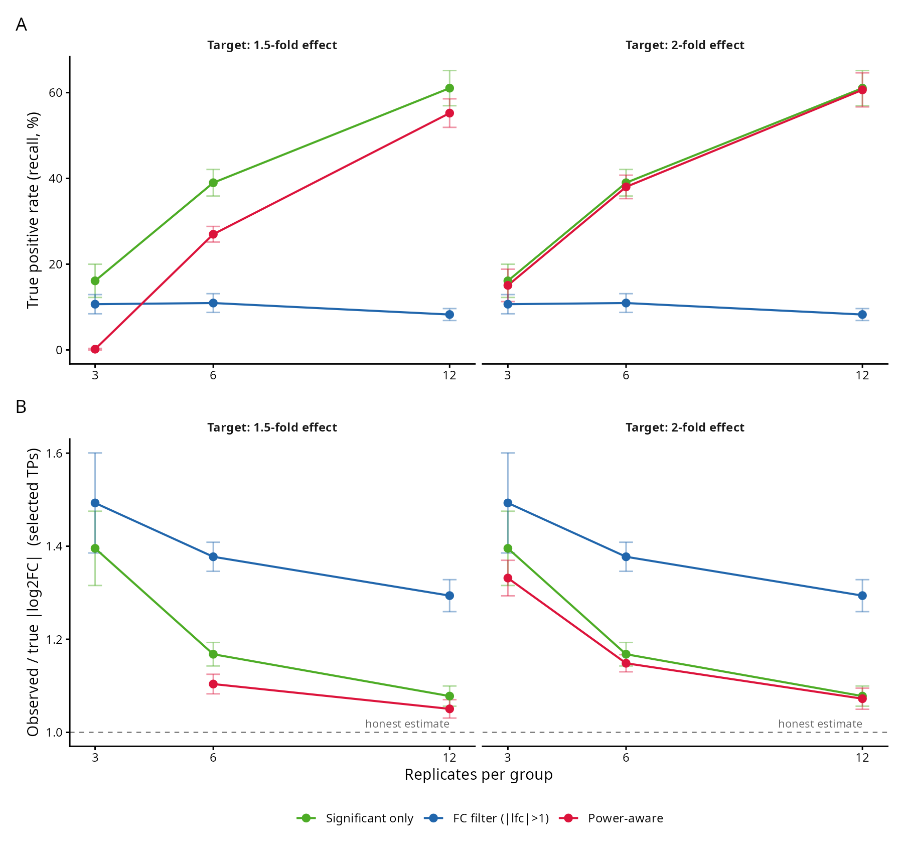

Every high-throughput differential expression analysis ends the same way: a volcano plot, with the adjusted p-value on the y-axis and the fold change on the x-axis, and a vertical line at some fold-change cutoff deciding which genes are interesting. However, this fold-change cutoff is typically arbitrary; there is simply no reason why that value was chosen.
The traditional volcano plot is honest about two things, statistical significance and effect size, but it is silent about the one quantity that determines how much either of them is worth in a typical experiment: statistical power. Running an underpowered experiment has two consequences:
- you have a low probability of actually detecting an effect when there is one; this is expected as it is the definition of type II error, and,
- When you DO detect a significant effect, its observed effect is almost certainly overestimated. This is called the winner’s curse.
A gene sitting far to the right in a volcano plot with a small p-value may be a robust discovery with 80% power behind it, or it may be a winner’s-curse artifact from an underpowered design whose observed fold change is inflated precisely because it had to be in order to reach significance at all. The plot cannot tell you which. Note that the usual remedy, filtering on an absolute fold-change threshold, does not fix this; it just moves the arbitrary line and silently discards real, reproducible effects that happen to be modest.

This motivated a small R package, volcanoPower (github.com/tpaixao/volcanoPower), that adds per-gene power to the standard DESeq2 results object and paints it on the volcano plot. The key statistical move is to base power on a pre-specified, biologically meaningful effect size rather than the observed one. The two quantities that drive a Wald-test power calculation in DESeq2 are the standard error of the log2 fold change, which DESeq2 already reports as lfcSE, and the target effect we care about detecting. For each gene, the non-centrality parameter is simply the ratio of target to standard error, and the power follows from the normal CDF:
\[ \text{power}_i = \Phi\!\left(\frac{|\Delta_i|}{\sigma_i} - z_{1-\alpha/2}\right) + \Phi\!\left(-\frac{|\Delta_i|}{\sigma_i} - z_{1-\alpha/2}\right), \]
where \(\Delta_i\) is the pre-specified target log2 fold change (1.5-fold by default, which is defensible in many biological contexts and must be defended in every one of them), \(\sigma_i\) is the gene’s lfcSE, and \(z_{1-\alpha/2}\) is the normal quantile. The second term is negligible in practice but keeps the two-sided form exact. The only input DESeq2 does not already provide is \(\Delta\), and it cannot: effect sizes of interest are a property of the biology and the experimental question, not of the data.
The reason for pre-specifying the critical effect size is the winner’s curse. In a scan over thousands of genes, the significant ones are enriched for positive noise in their effect estimates; the smaller the per-gene power, the larger the share of the observed estimate that is noise, and the more the significant set overstates its true effects. If power were computed from the observed fold change, the genes most distorted by this selection would also be the ones the calculation most trusted, which is circular. Anchoring on \(\Delta\) breaks the circularity: a gene with a large lfcSE cannot buy its way into the well-powered category by having a lucky observed effect, because the calculation never looks at the observed effect.
The package then reclassifies discoveries into three categories: not significant, significant but underpowered, and significant and well-powered. The power_volcano() plot colors genes by category instead of by arbitrary fold-change lines, and the result is a plot that answers the question a reader actually has, which is not “which genes pass a cutoff” but “which of these discoveries would survive a better-powered repeat”. add_power() works with both results() and lfcShrink() output, and power_summary() gives the breakdown as a table.

To know whether the categories mean anything, the simulation studies in the repository compare three discovery strategies, significant only, fold-change filtered, and power-aware, across sample sizes from 3 to 12 per group against known ground truth. The simulation is deliberately conventional: 3,000 genes, 15% truly differentially expressed with a 50/50 mix of small (0.3 to 0.8 log2 units) and large (1.0 to 2.5) effects, negative binomial counts with realistic dispersion, DESeq2 itself as the engine. Three findings recur across the 50 replicate runs per design.
The first is the winner’s curse, quantified. At n = 3 per group, significant true positives classified as underpowered show a mean inflation of the absolute observed effect over the true effect that the well-powered genes do not show. This is the familiar selection bias, but the power calculation separates the two regimes gene by gene, so the bias is visible and actionable rather than smeared across the whole hit list.
The second is that the fold-change filter is the worst of the three strategies for recall, at every sample size tested. It trades a real loss of sensitivity, all true effects below the cutoff are discarded regardless of how well they were measured, for a precision gain that the power-aware filter achieves without the loss. Filtering on |log2FC| > 1 removes genes whose true effect is 0.5 log2 units, which are perfectly detectable at moderate sample sizes, purely because of where an arbitrary line was drawn.
The third is that the power-aware filter dominates or matches the alternatives across the recall curve as sample size grows, and its advantage is largest exactly where typical RNASeq experiments are, at n = 3 to 5 per group. At larger sample sizes power is high for most expressed genes and the three strategies converge, which is itself a useful diagnostic: if your power-aware and significant-only lists are nearly identical, the experiment was adequately powered and you can stop worrying.

Simulations with known truth are necessary but not sufficient, so the same three strategies were compared on real data using the Schurch et al. (2016) S. cerevisiae dataset, 48 biological replicates per condition, with DESeq2 on the full design as ground truth (genes at padj < 0.001) and subsampled designs of 3, 5, 8, and 12 replicates per group scored against it. The recall pattern from the simulations replicates: the power-aware filter recovers a larger share of the ground-truth DEGs than the fold-change filter at small sample sizes, at comparable or better precision.
One limitation is that the power calculation is asymptotic, inherited from the normal approximation behind the Wald test, and it inherits DESeq2’s own modeling assumptions, including the mean-dispersion trend. It is a per-gene diagnostic built on the same machinery as the test itself, not an independent validation. It also requires the user to commit to a target effect size, which is an extra decision many analyses currently avoid by pretending the question does not exist. That decision is the point. A fold-change threshold is an answer without a question; a target effect size is a question, and once it is asked, power, sample size, and the interpretation of every significant gene all follow from it.
The package is small, three user-facing functions, no heavy dependencies beyond ggplot2, and the repository contains the full simulation and real-data validation scripts. For the working analyst the practical takeaway is modest and concrete: when a reviewer asks how many replicates the design needed, or which significant genes would replicate with more data, the volcano plot can now answer, gene by gene, instead of the analysis reaching for another arbitrary filter.